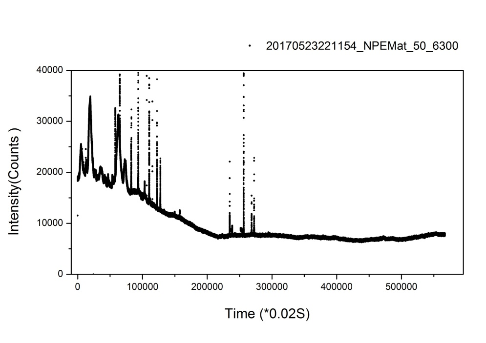
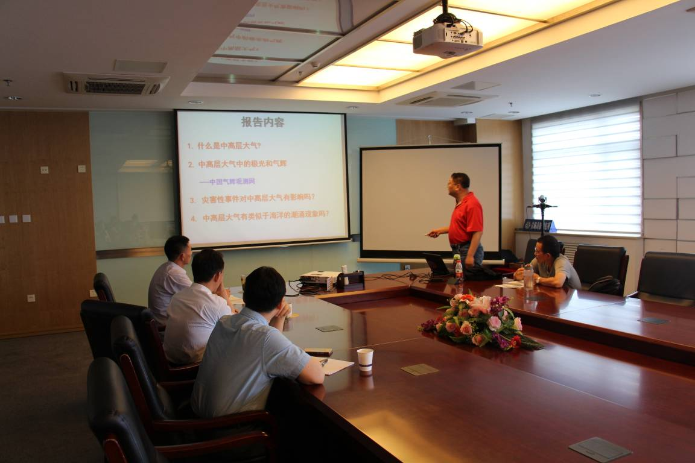

依托中国科学院加德满都科教中心（以下简称“加德满都中心”）, 中科院国家空间科学中心徐寄遥研究员领导的中高层大气组在尼泊尔首都建设安装了中高层大气气辉光度计设备，监测峰值高度在250km的630nm气辉的夜间辐射强度，开展中高层大气气辉的持续监测，同时实现了监测数据在加德满都与北京之间的实时传输。从2016年11月安装至今，已经积累了长达半年多的良好的科学研究资料。如图1显示的是2017年5月23日的气辉观测数据。
这些来自喜马拉雅山脉南侧的观测数据将和位于喜马拉雅山脉北侧的西藏羊八井地区的气辉观测数据相互配合，成为研究以青藏高原为核心的“第三极”的独特的观测资料，有助于研究该地区独特的复杂山地地形上空中高层大气波动的传播与演化特性，了解该地区上空气辉高度层的大气物理过程和光化学过程，进一步为全球中高层大气建模提供新的研究资料。
6月23日，应加德满都中心和环境变化与地表过程重点实验室邀请，徐寄遥研究员访问青藏高原研究所，并作题为“中高层大气气辉观测与研究--中国气辉观测网简介”的学术报告，青藏高原所所长姚檀栋院士主持了报告会。阳坤、梁尔源研究员和研究生等人员参加了本次报告会。
徐寄遥研究员对“中国气辉观测网”和“子午工程”进行了介绍，并重点介绍了气辉研究进展，阐述了在喜马拉雅山南坡开展气辉观测的必要性。徐寄遥研究员领导的中高层大气组希望依托加德满都中心开展中高层大气气辉的长期监测工作，拓展“中国气辉观测网”至南亚周边国家，加强第三极地区中高层大气不同高度圈层之间独特的耦合过程研究。会后，大家就气辉监测及其对环境变化研究的意义展开了热烈的讨论。

图1 2017年5月23日的气辉观测数据

2017年6月23日报告会现场